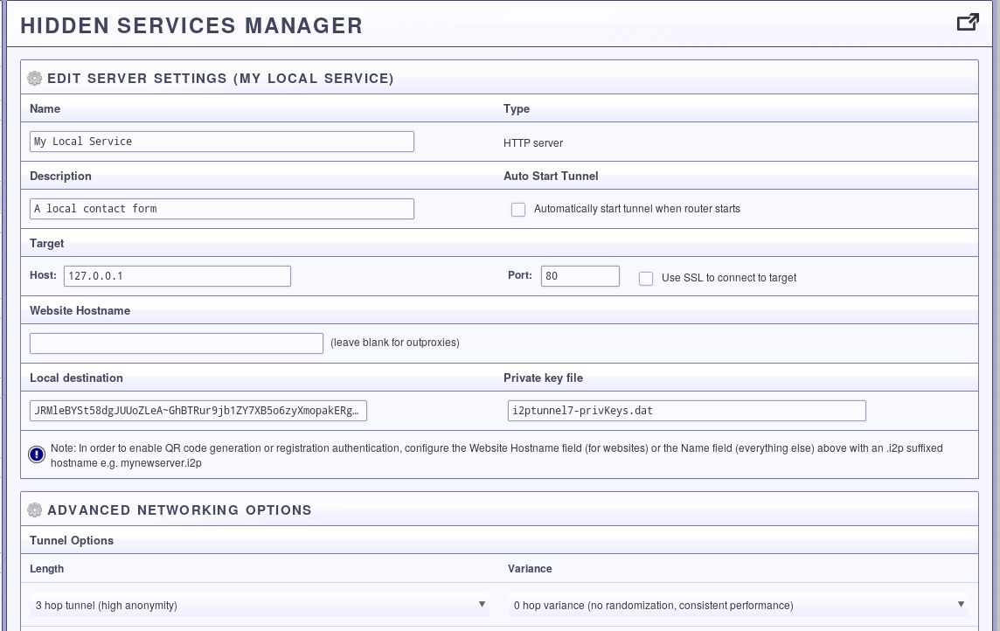
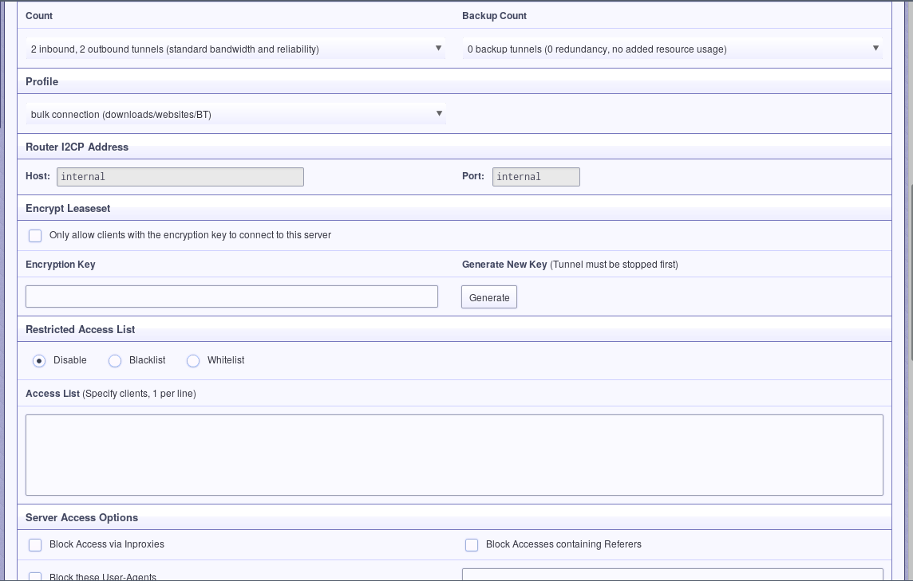
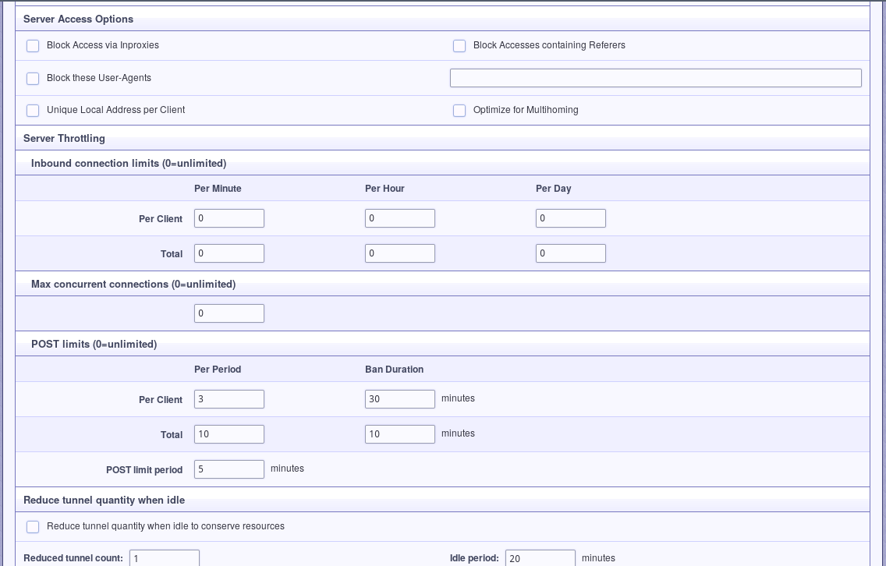
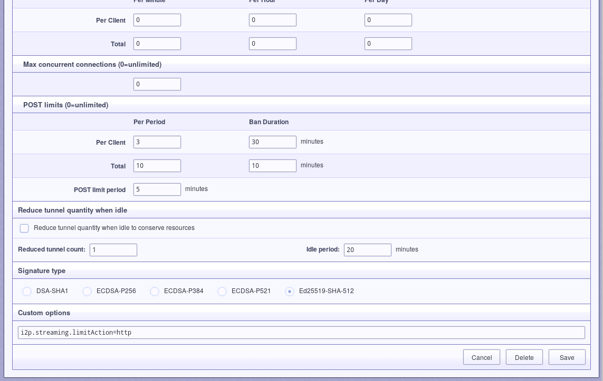

Although the Java i2p router comes pre-configured with a static web server, jetty, to provide the user's first eepSite, many require more sophisticated functionality from their web server and would rather create an eepSite with a different server. This is of course possible, and actually is really easy once you've done it one time.
Although it is easy to do, there are a few things you should consider before doing it. You will want to remove identifying characteristics from your web server, like potentially identifying headers and default error pages that report the server/distro type. More information about threats to anonymity posed by improperly configured applications see: Riseup here:, Whonix Here:, This blog article for some opsec fails:, and the i2p applications page here. Although much of this information is expressed for Tor Onion Services, the same procedures and principles apply to hosting applications over i2p.
Go to the i2p web interface at 127.0.0.1:7657 and open the Hidden Services Manager(links to localhost). Click the button that says "Tunnel Wizard" to begin.
Step One: Open the Tunnel Wizard
The tunnel wizard is very simple. Since we're setting up an http server, all we need to do is select a server tunnel.
Step Two: Select a Server Tunnel
Now I may be wrong, but I'm pretty sure that the only difference between http server tunnels and regular server tunnels is that http server tunnels add in the X-I2P-DEST* header's using the repliable address of the client visiting the site. If you don't make use of X-I2P-DEST, you could just use a server tunnel. Nonetheless, select the HTTP tunnel for now.
Step Three: Select an HTTP Tunnel
For your own benefit and ability to remeber and distinguish the what you are using the tunnel for, give it a good nickname and description. If you need to come back and do more management later, then this is how you will identify the tunnel in the hidden services manager.
Step Four: Give it a name and a description
In this step, you point the web server at the TCP port where your web server is listening. Since most web servers listen on port 80 or port 8080, the example shows that. If you use alternate ports or virtual machines or containers to isolate your web services, you may need to adjust the host, port, or both.
Step Five: Configure the Host and Port
I cannot think of a way to elaborate on this step.
Step Six: Decide whether to start it automatically
Finally, take a look at the settings you have selected. If you approve, save them. If you did not choose to start the tunnel automatically, go to the hidden services manager and start it manually when you wish to make your service available.
Step Six: Review your settings
i2p provides a detailed panel for configuring the http server tunnel in custom ways. I'll finish this tutorial by walking through all of them. Eventually.
   